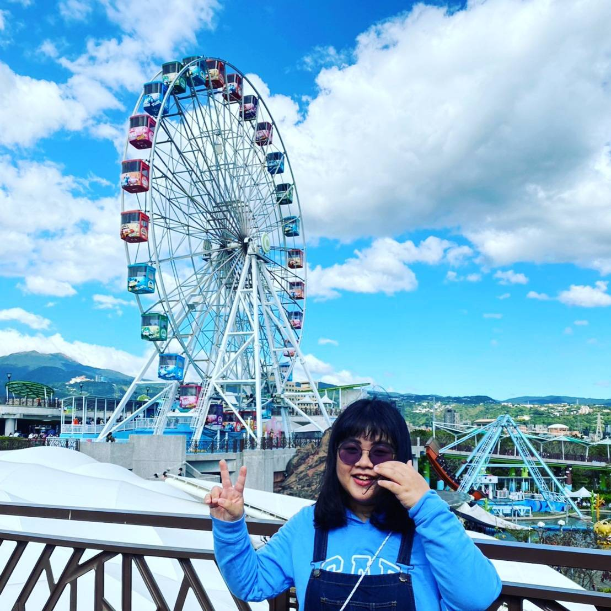
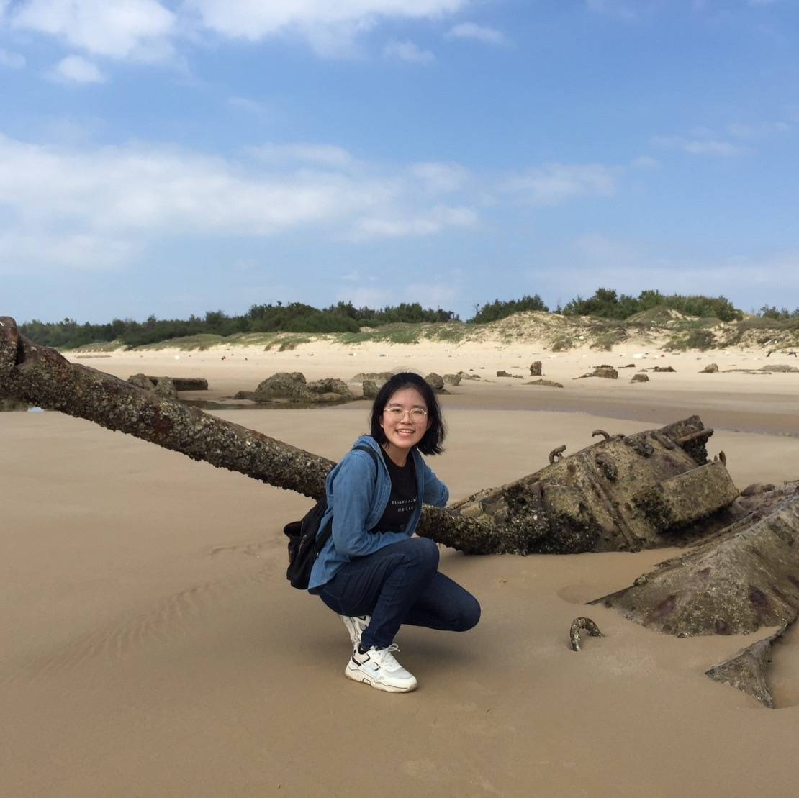

柯幸孜
就讀於科技系，喜歡觀察與挑戰，堅信烏雲後面仍是燦爛的晴天。是個勇於挑戰的人，儘管結果不如預期，還是會越挫越勇。目前渴望成為一位全能的軟體工程師，將自己學習應用在生活中，為世界創造更多可能性。

吳亞蓉
就讀於科技系，喜歡探索與手作，認為所有成功都需要相對應的付出與努力。是個生於世俗卻不拘泥於世俗的人。目前希望成為一位教育工作者，把自己的想法與知識傳遞給學習者。

盧紫妍
就讀於科技系，喜歡手作及發想，深信沒有自己無法達成的事情。是個努力想跟上時代的女孩，但在學科與設科之間毅然決然選擇了設科。目前目標是成為一位有用的老師，但心中依然藏著對建築的熱愛。